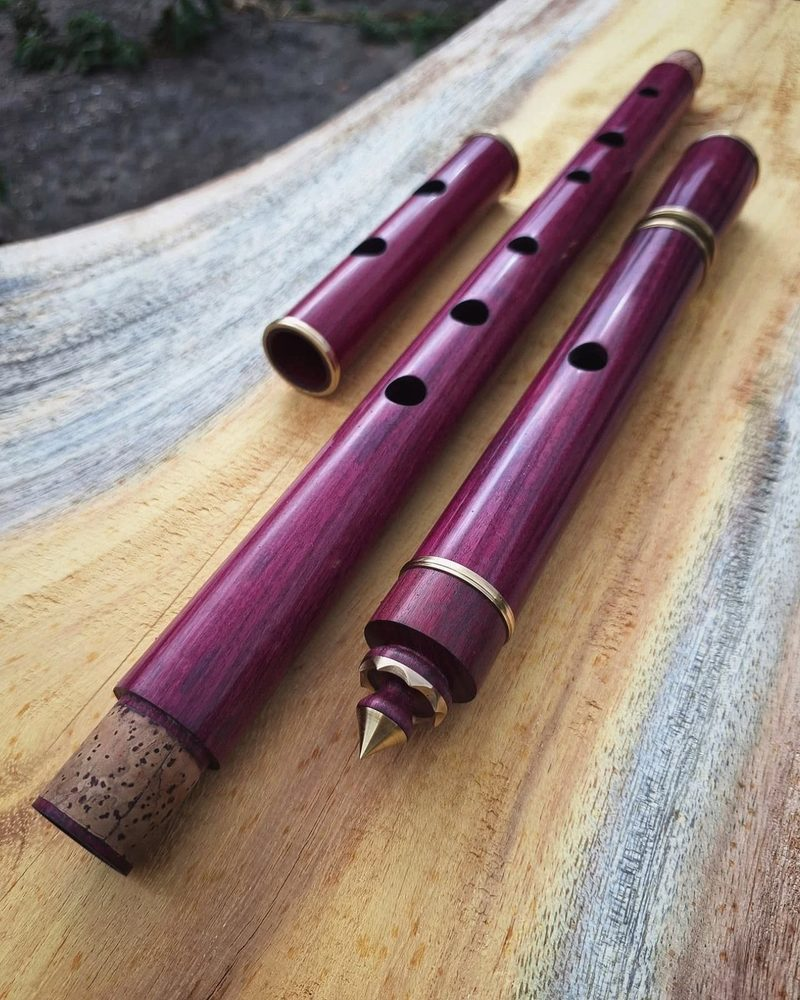

Flauta irlandesa · 2025
Flautas tipo irlandesas em madeira de Jacarandá, no tom de Ré.
Perguntar sobre estaA flauta de madeira da música tradicional irlandesa: seis furos, sem chaves. Faço em Ré grave (low D), de corpo cônico, em 2 ou 4 partes.

Completa, com anéis de latão e stopper, ou simples, sem os dois. Valores e opções em Valores.
Flauta irlandesa · 2025
Flautas tipo irlandesas em madeira de Jacarandá, no tom de Ré.
Perguntar sobre esta


Flauta irlandesa · 2025
Flauta tipo Irlandesa em madeira de Jacarandá, no tom de Ré grave. Segmentada em 2 partes: bocal e corpo. Espiga revestida em cortiça portuguesa. Coroa com stopper móvel. Alcança mais de 2.5 oitavas. Anéis de contenção em Latão. Acompanha kit limpeza completo, tabela de digitação e partitura pra iniciante.
Perguntar sobre esta


Flauta irlandesa · 2025
Flauta transversal tipo Irlandesa, no tom de Low D, em madeira de Roxinho.
Perguntar sobre esta


Flauta irlandesa · 2025
Flauta transversal cônica tipo irishflute, em madeira de Roxinho, no tom de Low D. Segmentada em 4 partes, espigas revestidas em cortiça portuguesa. Anéis e slide de afinação em latão. Stopper móvel. Alcance de duas oitavas e meia. Timbre grave e encorpado.
Perguntar sobre esta


Flauta irlandesa · 2024
Flauta Irlandesa em madeira de Roxinho. Tom: Low D. Stopper móvel. Anéis de Alumínio. Corpo cônico, em 3 partes.
Perguntar sobre esta

Flauta irlandesa · 2023
Detalhe da coroa. Flauta tipo Irish Flute, tom low D. Madeira de Roxinho e anéis de Alumínio.
Perguntar sobre esta


Flauta irlandesa · 2023
Flauta tipo Irish Flute, cônica, no tom de low D. Madeira de Roxinho. Corpo segmentado em três partes. Possui anéis de metal para reforço nas espigas do encaixe e nas demais extremidades, garantindo a forma da madeira, e maior vida útil ao evitar rachaduras. O encaixe é em cortiça portuguesa.
Perguntar sobre esta


Flauta irlandesa · 2022
Flauta tipo Irish Flute, com furo cônico, no tom de Low D, em madeira de Roxinho. Alcance de mais de 2.5 oitavas. Possui 3 sessões de encaixe. Furo da Embocadura Elíptico. Possui anéis de reforço de metal em todas as extremidades do encaixe, inclusive nas espigas internas.
Perguntar sobre estaMais fotos em @igorbastos.flauta.